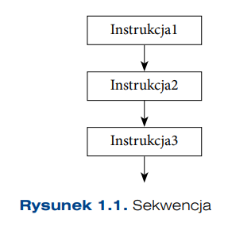
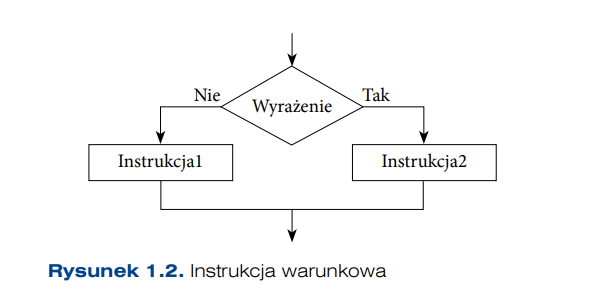
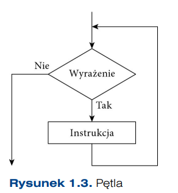
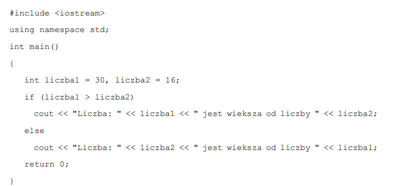

Programowanie Strukturalne
W programowaniu strukturalnym kod programu jest dzielony na hierarchicznie ułożone bloki. Program tworzony jest z wcześniej zdefiniowanych struktur, takich jak sekwencja (ciąg kolejnych instrukcji), instrukcja warunkowa (if, if...else), pętla (while, repeat), instrukcja wyboru. Struktury te są stosowane do małych bloków programu zawierających podstawowe instrukcje typu podstawienia, wejścia-wyjścia lub wywołania procedur i funkcji. Dzięki temu kod jest przejrzysty i łatwy w utrzymaniu.
Występujące w językach strukturalnych instrukcje skoku (goto) lub przerwania (continue, switch) są niezgodne z zasadami strukturalności, ale pojawiają się w językach programowania, ponieważ zwiększają czytelność programu.
Prawie w każdym języku można programować strukturalnie. Jednak niektóre z nich są do tego celu specjalnie przeznaczone. Modelowym przykładem języka strukturalnego był język Pascal.
Reasumując: programowanie strukturalne zachęca do dzielenia programu na bloki (moduły, podprogramy), a powstałych bloków na mniejsze jednostki w kolejności wykonywania. Wykorzystuje instrukcje sterowania i pętle do kontrolowania przebiegu programu. K od staje się dzięki temu bardziej przejrzysty i wzrasta jego wydajność.
Sposób programowania w tym paradygmacie może być różny w zależności od zastosowanego systemu operacyjnego i języka programowania. Jednak podstawowe zasady programowania powinny zostać niezmienne.
Zmienna
Jednym z podstawowych elementów języków programowania jest zmienna. Jest ona abstrakcją komórki pamięci komputera. Każdą zmienną można opisać za pomocą nazwy, adresu, wartości, typu, okresu życia i zakresu widoczności.
- Nazwa — określa nazwę, przez którą następuje odwołanie do zmiennej. Dla nazwy powinny zostać zdefiniowane: zakres dozwolonych znaków, liczba dozwolonych znaków, rozróżnialność małych i dużych liter.
- Adres — określa bieżący adres zmiennej w pamięci.
- Wartość — określa wartość przypisaną do zmiennej.
- Typ — określa zbiór dopuszczalnych wartości, jakie zmienna może przyjmować.
- Zakres widoczności — określa blok instrukcji, w których zmienna jest widoczna i można się do niej odwołać.
- Okres życia — określa czas, przez który zmienna istnieje. Przykładowo okres życia zmiennej zadeklarowanej w funkcji zaczyna się od wejścia do funkcji i kończy się w momencie zakończenia funkcji. Istnieją również zmienne zadeklarowane w funkcji, które widoczne są tylko w tej funkcji, ale okres życia dotyczy całego czasu wykonania programu.
Proste typy danych
Typto zbiór wartości, które może przyjmować zmienna. Większość języków programowania ma zestaw typów prostych.
Typ całkowity (int, integer) odpowiada liczbom całkowitym, ale mogą wystąpić jego warianty związane z rozmiarem liczby (byte, short, long) i jej znakiem (signed, unsigned).
Typy zmiennopozycyjneodpowiadają liczbom rzeczywistym (float, double).
Typy znakoweprzechowują informacje o znakach zapisane w kodzie ASCII lub coraz częściej w Unicode (char, character).
Typ logiczny przechowuje wartość logiczną Prawda lub Fałsz i jest zapisywany za pomocą jednego bitu lub całego bajta.
Typy stałoprzecinkowemają ustaloną liczbę cyfr i miejsc po przecinku.
Z typów prostych można tworzyć typy złożone, na przykład rekordy, tablice, typy wyliczeniowe.
Operatory
Z każdym typem związana jest grupa operacji, które mogą zostać wykonane na wartościach tego typu. Przykładowo:
- Typ całkowity — operacje dodawania (+), odejmowania (–), mnożenia (*), dzielenia (/).
- Typ logiczny — operacje koniunkcji (And), alternatywy (Or), negacji (Not).
- Typ znakowy — operacja łączenia tekstów (+).
Operacje wejścia-wyjścia
Operacje wejścia-wyjścia pozwalają na pobieranie i wypisywanie danych z konsoli.
Instrukcje
- Sekwencja — ciąg kolejnych poleceń (rysunek 1).
- Instrukcja warunkowa — pozwala na rozgałęzienie przebiegu działania programu(rysunek 2).


Jeżeli wartość wyrażenia jest prawdą, to zostanie wykonana Instrukcja2, w przeciwnym razie — Instrukcja1.
- Pętla — pozwala na wykonywanie bloku programu kilkakrotnie w pętli, dopóki wartością sprawdzanego wyrażenia jest prawda (rysunek 3).
Dopóki wartość wyrażenia jest prawdą, wykonywana jest Instrukcja.

Przykład 1
Użycie instrukcji warunkowej w języku C++:
